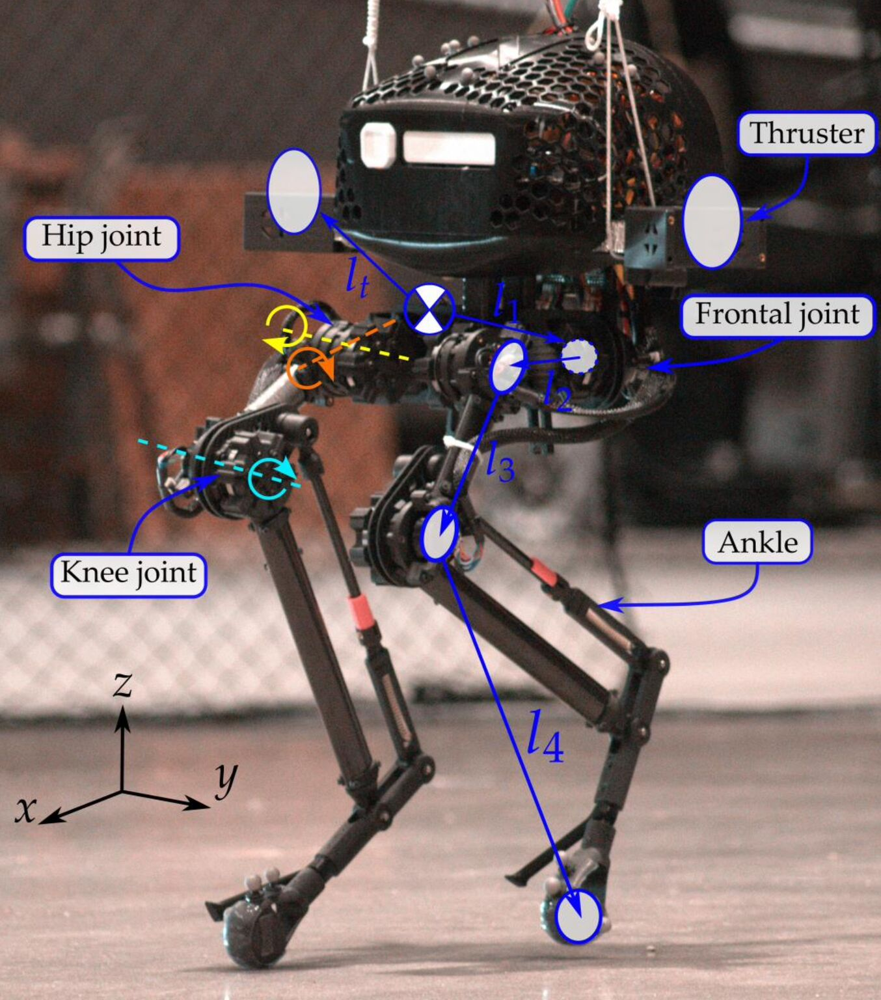
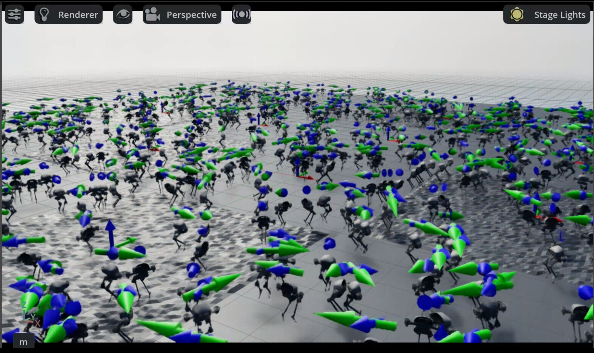

Dynamic Multimodal Locomotion: PPO for Bipedal Gait Training
ROLE
RL Researcher
LAB
Silicon Synapse Lab
DURATION
Dec 2024 - Apr 2025
TEAM SIZE
Individual (Mentored)
PROJECT OVERVIEW
Teaching robots to walk through reinforcement learning
This project presents a reinforcement learning-based framework for training dynamic bipedal locomotion on the Harpy robot—a six-jointed bipedal platform developed at Northeastern University's Silicon Synapse Lab. Using Proximal Policy Optimization (PPO) within NVIDIA's Isaac Sim, I trained a robust walking policy in massively parallel simulation environments, achieving stable, symmetric gaits with promising sim-to-real transferability.
Bipedal locomotion stands as one of the most sophisticated forms of movement in robotics, requiring precise control, dynamic balance, and adaptability to uncertain environments. Traditional control approaches like Zero Moment Point (ZMP) planning often rely on accurate modeling and tend to fall short when faced with real-world disturbances. In contrast, reinforcement learning provides a model-free, data-driven alternative that allows robots to learn effective locomotion strategies through trial and error.
Working independently under the mentorship of Prof. Alireza Ramezani, Dr. Rifat Sipahi, PhD candidate Shreyansh Pitroda, and Lab Assistant Arjun Viswanathan, I reverse-engineered RL control logic from Boston Dynamics' quadruped robot Spot and adapted these principles for bipedal walking. This project represents the foundation for deploying learned policies onto real-world robotic platforms with low-latency performance.
Harpy is a custom-designed bipedal robot developed at the Silicon Synapse Lab, featuring six actuated joints—three per leg (hip, knee, and ankle)—while the feet remain passive and rigidly attached. The robot is equipped with thrusters that assist with balance and aerial maneuvers, though this project focused exclusively on ground-based walking without thruster assistance.

The Harpy bipedal robot with labeled joint structure: hip, frontal, knee, and ankle joints forming the 6-DOF leg configuration
Robot Specifications
Degrees of Freedom: 6 active joints (3 per leg: hip, knee, ankle)
Joint Types: Revolute joints with position and torque control
Actuation: Delayed PD controller with 5ms latency to mimic real-world response
Additional Features: Thrusters for aerial maneuvers (not used in this walking task)
The symmetric joint configuration allows consistent control strategies across both legs, while contact sensors provide critical feedback for stance phase detection and reward calculation during training.
BACKGROUND & MOTIVATION
Why reinforcement learning for bipedal walking?
Training bipedal robots to walk effectively involves addressing several complex challenges: underactuation, nonlinear dynamics, unpredictable environments, and sensor-actuator delays. Traditional approaches have significant limitations when exposed to real-world variability.
Limitations of Traditional Control
Zero Moment Point (ZMP) Control: Heavily dependent on accurate system models and performs poorly with real-world uncertainties
Inverted Pendulum Models: Simplified representations that don't capture full complexity of bipedal dynamics
Trajectory Optimization: Computationally expensive and requires extensive manual tuning for each terrain type
The Reinforcement Learning Advantage
With the rise of deep learning, reinforcement learning has emerged as a promising alternative. Instead of relying on manually crafted control strategies, RL enables robots to learn locomotion behaviors directly through trial-and-error interaction with the environment. This eliminates the need for extensive controller design and allows for adaptive behavior in dynamic situations.
However, the success of RL methods depends critically on algorithm selection and training stability. For this project, I chose Proximal Policy Optimization (PPO) due to its stability, sample efficiency, and compatibility with Isaac Lab's parallel training capabilities.
DESIGN CHALLENGE
Achieving natural, robust bipedal walking
The primary challenge was to develop a learning framework that could train the Harpy robot to walk naturally, stably, and efficiently—while ensuring the learned behaviors would transfer from simulation to real hardware. This required solving multiple interconnected problems simultaneously.
Technical Challenges
High-Dimensional Control: Coordinating 6 joints simultaneously with proper phase timing for alternating foot contact
Reward Engineering: Designing a reward function that encourages walking without creating undesirable behaviors like hopping or shuffling
Sim-to-Real Gap: Ensuring policies trained in simulation remain effective on physical hardware with actuator delays and sensor noise
Sample Efficiency: Learning effective gaits requires millions of training steps—impossible to collect on physical robots
Stability vs. Progress: Balancing exploration (trying new movements) with maintaining balance (not falling over)
The solution involved combining PPO's stable learning algorithm with careful reward engineering, domain randomization for robustness, and massively parallel simulation to accelerate training. The system needed to learn coordination, balance, and velocity tracking simultaneously—a complex multi-objective optimization problem.
REINFORCEMENT LEARNING ALGORITHM
Proximal Policy Optimization (PPO)
PPO belongs to the policy-gradient family and offers a reliable tradeoff between performance and robustness, especially in continuous control tasks like bipedal walking. I selected PPO over alternatives like DDPG, TD3, and SAC due to its superior stability and ease of implementation.
Why PPO for Bipedal Locomotion?
Stable Updates: Clipped objective prevents large, destabilizing policy changes that could break walking patterns
Sample Efficient: Multiple epochs of learning from each batch of collected experience
Continuous Actions: Natural fit for outputting target joint positions as continuous values
Parallelization: Works excellently with Isaac Lab's GPU-accelerated parallel environments
Mathematical Foundation
PPO improves the policy while avoiding sudden changes through a clipped surrogate function. The algorithm constrains how much the policy can change between updates using a clipping parameter (ε = 0.2), preventing catastrophic performance drops that plague other RL algorithms.
Implementation Configuration
Learning Rate: 1 × 10⁻³
Clipping Parameter: 0.2 (limits policy updates)
Generalized Advantage Estimation (GAE): λ = 0.95
Epochs per Update: 5 (multiple passes over collected data)
The policy network produces joint target positions which are passed through a delayed Proportional-Derivative (PD) controller. Noise buffers were added to mimic sensor and actuator uncertainties, helping the policy generalize to real-world deployment conditions.
TRAINING INFRASTRUCTURE
Massively parallel training in Isaac Sim
Training was conducted using Isaac Lab, a reinforcement learning framework built upon NVIDIA Isaac Sim. Isaac Sim offers high-fidelity physics simulation and GPU-accelerated computation, enabling the deployment of massive parallel environments that dramatically accelerate policy learning.
Simulation Frequency: 500 Hz (0.002 second timesteps)
Control Frequency: 50 Hz (policy queries every 0.02 seconds)
Decimation Factor: 10 (10 simulation steps per control step)
Physics Engine: NVIDIA PhysX for accurate rigid-body dynamics
Episode Length: Maximum 400 steps per episode

1024 Harpy robot instances training simultaneously in Isaac Sim, each learning independently in parallel environments
Benefits of Massive Parallelization
Running 1024 environments simultaneously provides several critical advantages:
Data Collection Speed: Collect 1024× more experience per wall-clock second compared to single environment
Faster Convergence: More diverse experiences lead to better generalization and faster policy improvement
Exploration Diversity: Each environment explores slightly different strategies, increasing chances of discovering effective gaits
Statistical Stability: Averaging across many environments reduces variance in gradient estimates
This parallelization infrastructure enabled training the walking policy to completion in hours rather than weeks, making iterative development and reward tuning practically feasible.
CONTROL ARCHITECTURE
PPO implementation and control flow
The control system integrates real-time sensor feedback, observation processing, neural policy inference, delayed actuation, and reward evaluation—creating a closed-loop system for learning and control.
Observation Space (48 Dimensions)
The robot receives proprioceptive information from multiple sources:
Base Linear Velocity: 3D velocity in body frame (vₓ, vᵧ, vᵧ)
Base Angular Velocity: 3D angular rates (ωₓ, ωᵧ, ωᵧ)
Base Orientation: Quaternion representation (4D)
Projected Gravity: Gravity vector in body frame (3D)
Joint Positions: Current angles for all 6 joints
Joint Velocities: Angular rates for all 6 joints
Previous Actions: Last commanded joint positions (6D)
Commanded Velocity: Desired forward and yaw rates (2D)
Policy Network Architecture
The observation vector is processed by a neural network with three fully connected hidden layers (512, 256, 128 neurons) using ReLU activations. The network splits into two heads:
Actor Head: Generates 6-dimensional continuous action vector (target joint positions)
Critic Head: Estimates value function for computing advantages during PPO updates
Delayed PD Control
Actions don't directly control the robot. Instead, they pass through a delayed Proportional-Derivative controller that simulates realistic actuation latency:
Torques clipped to safety limits before application
This delay mechanism encourages the policy to adapt to response lag, dramatically improving sim-to-real transfer by training the robot to anticipate and compensate for actuation delays encountered in physical hardware.
REWARD ENGINEERING
Shaping natural walking through rewards
Achieving natural and stable walking required a carefully designed reward function refined through multiple iterations. The reward structure was modular, with each component assigned specific weights that collectively shaped the learning objective.
Positive Reward Components
Base Linear Velocity (Weight: 8.0): Encourages tracking commanded velocity using exponential kernel—smooth reward landscape that peaks when actual velocity matches command
Bipedal Gait (Weight: 20.0): HIGHEST WEIGHT. Rewards temporal coordination where one foot is in air while other maintains ground contact. Prevents synchronized hopping and establishes rhythmic walking
Air Time (Weight: 8.0): Encourages appropriate swing phases with foot clearance, while limiting excessive flight time that causes bouncy, unstable gaits
Contact Time (Weight: 8.0): Shapes stance phases, ensuring sufficient ground support during weight transfer between legs
Penalty Components
Air Time Variance (Weight: -1.5): Discourages asymmetric gaits by penalizing differences in air time between feet, preventing "limping" behaviors
Base Orientation (Weight: -5.0): Maintains upright posture by discouraging excessive leaning. More tolerant of slight forward lean (natural in walking) while strongly penalizing side-to-side rocking
Base Motion (Weight: -4.0): Combines vertical bouncing (80% weighting) and angular velocity (20%) to promote energy-efficient, smooth locomotion
Action Smoothness (Weight: -2.0): Prevents high-frequency oscillations by discouraging large changes in consecutive actions, creating fluid joint trajectories
Foot Slip (Weight: -2.0): Targets horizontal foot movement during ground contact, encouraging stable foot placement with good traction
Reward Tuning Journey
During early training, several problematic behaviors emerged:
Limping gaits favoring one leg over the other
Idle standing (more stable than attempting to walk)
Foot dragging with insufficient clearance
Excessive vertical bouncing and body oscillations
Through iterative tuning, I progressively adjusted weights—increasing bipedal gait reward from 10.0 to 20.0, introducing foot slip penalties, balancing velocity tracking with action smoothness, and strengthening base motion penalties. The final reward structure produced smooth, symmetric gait cycles with improved coordination and upright posture.
SIM-TO-REAL TRANSFER
Domain randomization for robustness
To ensure the learned policy would work on real hardware—not just in perfect simulation—I incorporated comprehensive domain randomization techniques. These methods introduce controlled variability during training, forcing the policy to generalize across diverse physical conditions.
Randomized Physical Parameters
Base Mass: ±10% variation from nominal
Base Inertia: ±20% scaling to simulate payload changes
Friction Coefficient: Uniformly sampled from [0.7, 1.0]
Joint Damping: Varied between [0.01, 0.1]
Motor Strength: ±10% scaling to mimic battery voltage variations
Initialization Randomization
Reset Position: X and Y coordinates randomized within ±0.5m
Reset Orientation: Pitch ±0.7 rad, Yaw ±π rad (full rotation)
Initial Velocities: Small random perturbations to break symmetry
Runtime Perturbations
External Disturbances: Random push forces applied every 8-12 seconds
Sensor Noise: Gaussian noise on joint angle and velocity readings
Command Noise: Perturbations on commanded forward and yaw velocities
Optional Terrain: Sinusoidal elevation changes for uneven ground
Impact on Policy Robustness
Domain randomization resulted in dramatic improvements:
Greater resilience to mass, inertia, and friction variations
Consistent performance despite actuation delays and sensor noise
Improved gait symmetry and foot placement accuracy
Successful recovery from external push disturbances
Without randomization, policies overfitted to specific simulation conditions and failed catastrophically when deployed under different physical parameters. Domain randomization proved critical for preparing Harpy to walk in the real world.
TRAINING RESULTS
Policy learning and performance analysis
After training for over 10,000 policy updates across 1024 parallel environments, the PPO policy successfully learned stable, coordinated bipedal walking. The results demonstrate clear progression from unstable exploration to controlled locomotion.
Reward Progression: Two-Phase Learning
The training revealed distinctive two-phase learning:
Exploration Phase (0–7,000 iterations): Reward remained low (5-10 units) with minimal improvement. The policy struggled to discover effective locomotion strategies in the high-dimensional action space.
Exploitation Phase (7,000–9,000 iterations): Dramatic exponential increase with rewards rising from 10 to over 100—a 10-fold improvement! This inflection point marks when the robot transitioned from unstable exploration to coordinated walking.
Peak Performance: Maximum reward of 101.8 achieved at iteration 9,000
Velocity Stabilization Analysis
Analysis of base velocity components revealed three distinct phases:
Initial Instability (0-75 steps): High-amplitude oscillations with vertical velocity spikes reaching 3 m/s—highly unstable gait with the robot struggling to maintain balance
Transition Phase (75-125 steps): Critical stabilization transition with notable reduction in oscillation amplitudes
Stabilized Phase (125-250 steps): All velocity components consistently within narrow bands (±0.5 m/s), representing substantial stability improvement
This progressive stabilization directly correlates with the policy's improved coordination of the bipedal gait cycle, successfully internalizing both stability constraints and efficient locomotion patterns.
SYSTEM DEMONSTRATION
Trained policy in action
Watch the Harpy robot execute the learned walking policy after training. The simulation demonstrates stable bipedal locomotion with coordinated leg movements, proper foot alternation, and velocity tracking.
Full walking demonstration showing the trained PPO policy executing stable bipedal gait with proper alternating foot contact
MY CONTRIBUTION
Individual research and implementation
This project was completed independently as part of my Master's in Robotics at Northeastern University, under the guidance of Prof. Alireza Ramezani and the Silicon Synapse Lab team. The work served as my graduate project, demonstrating end-to-end reinforcement learning research from problem formulation to implementation and analysis.
Key Contributions
Custom Environment Development: Built complete task environment within Isaac Lab for bipedal locomotion training, including observation space design, action space configuration, and episode management
PPO Training Framework: Implemented scalable, domain-randomized training pipeline using 1024 parallel environments, optimizing for GPU utilization and sample efficiency
Reward Engineering: Designed modular reward structure promoting stable locomotion, balanced posture, and consistent foot-ground contact through iterative testing and refinement
Delayed PD Implementation: Integrated actuation delay mechanism to mimic real-world latency and improve sim-to-real transferability
Results Analysis: Conducted comprehensive evaluation of training performance, identifying key learning phases and areas for improvement
Reverse-Engineering Inspiration
My approach was inspired by how Boston Dynamics' Spot robot achieves robust locomotion. I studied their control principles and adapted those concepts for bipedal walking on Harpy. This reverse-engineering process taught me how to think about hierarchical control, where high-level policies command behaviors that lower-level controllers execute with appropriate compliance.
KEY FEATURES
System capabilities
Massively Parallel Training
1024 simultaneous robot instances in Isaac Sim running at 500 Hz simulation frequency, enabling rapid policy learning and diverse experience collection
PPO Algorithm
Stable reinforcement learning with clipped objective, GAE advantage estimation, and entropy regularization for robust bipedal control
Modular Reward Structure
Carefully tuned multi-component rewards balancing velocity tracking, gait symmetry, stability, and energy efficiency
Domain Randomization
Comprehensive randomization of physical parameters, initialization conditions, and runtime perturbations for sim-to-real transfer
Delayed PD Control
5ms actuation delay simulation to model real-world hardware latency, improving policy robustness for physical deployment
High-Fidelity Physics
NVIDIA PhysX engine with accurate rigid-body dynamics, contact modeling, and GPU-accelerated computation
LIMITATIONS & FUTURE WORK
Challenges encountered and next steps
Current Limitations
Knee Joint Tracking: Analysis revealed commanded knee positions exceeded 50 radians (physically unrealistic) while actual positions remained around 2-3 radians. This indicates absence of action normalization in the policy network output layer.
Left-Right Asymmetry: Uneven behavior between legs likely stems from initialization bias in policy network weights that became self-reinforcing during training.
Long Exploration Phase: 7,000 iterations (78% of training) with minimal reward improvement before breakthrough—indicates inefficient exploration of high-dimensional action space.
Flat Terrain Only: Current policy trained exclusively on flat ground. Real-world deployment requires adaptation to stairs, slopes, and uneven surfaces.
Proposed Improvements
Action Space Constraints: Incorporate tanh activation with proper scaling in policy output layer to limit commands to physically achievable joint angle ranges
Curriculum Learning: Progressive difficulty increase from flat ground to stairs to undulating terrain, reducing exploration requirements
Demonstration Data: Initialize policy with human demonstrations or classical controller outputs to bypass lengthy exploration phase
Enhanced Model Fidelity: Improve simulation accuracy for joint compliance, actuation saturation, and realistic contact dynamics
Multimodal Terrain: Train policies that seamlessly transition across various terrains including slopes, stairs, and dynamic surfaces
RESULTS & IMPACT
Successfully learned stable bipedal walking
This project successfully demonstrated that reinforcement learning can train complex bipedal locomotion behaviors in simulation with promising sim-to-real transfer characteristics. The trained policy achieved stable, coordinated walking with proper gait alternation and velocity tracking.
"This work establishes a foundation for dynamic locomotion in real-world environments, demonstrating the power of combining PPO, massive parallelization, and domain randomization for learning robust robotic control policies."
Key Achievements
Successfully trained walking policy from scratch using only reward signals
Achieved 10-fold reward improvement during exploitation phase (10 → 101.8)
Demonstrated clear velocity stabilization with oscillations reduced by over 80%
Implemented complete RL pipeline from environment design to policy deployment
Created modular, reusable reward structure applicable to other legged robots
Validated domain randomization techniques for sim-to-real transfer
Contributed to ongoing research at Silicon Synapse Lab for Harpy deployment
The project deepened my understanding of reinforcement learning, reward shaping, and the critical importance of sim-to-real considerations in robotics. This work will serve as the foundation for future research on multimodal terrain adaptation and eventually deploying learned policies on the physical Harpy robot.